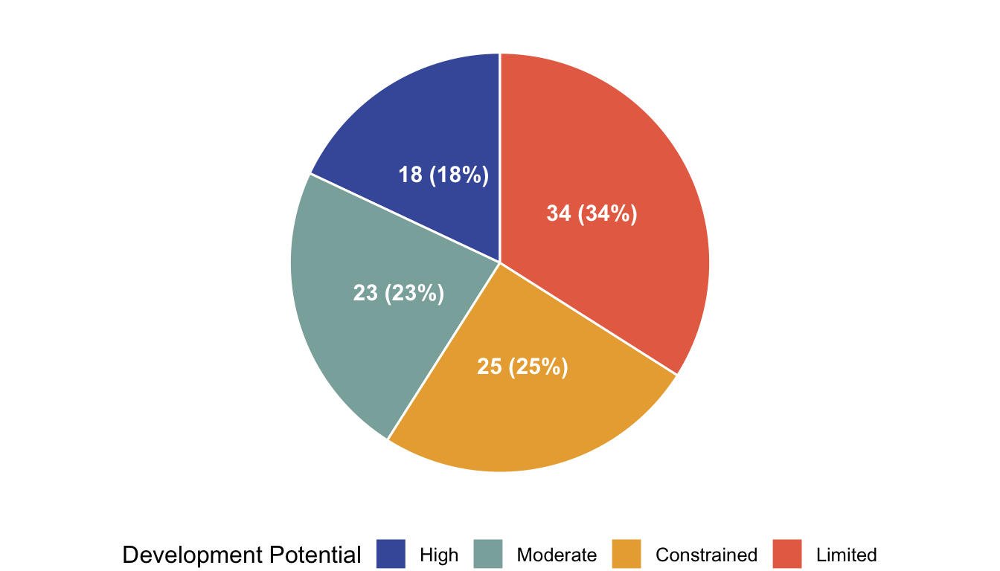
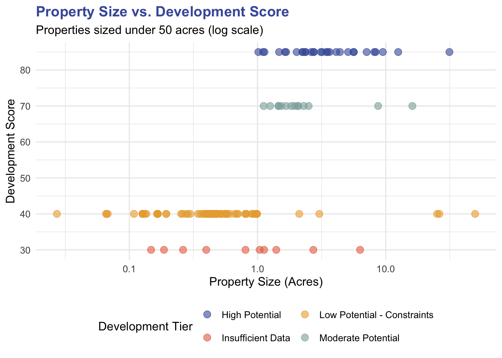
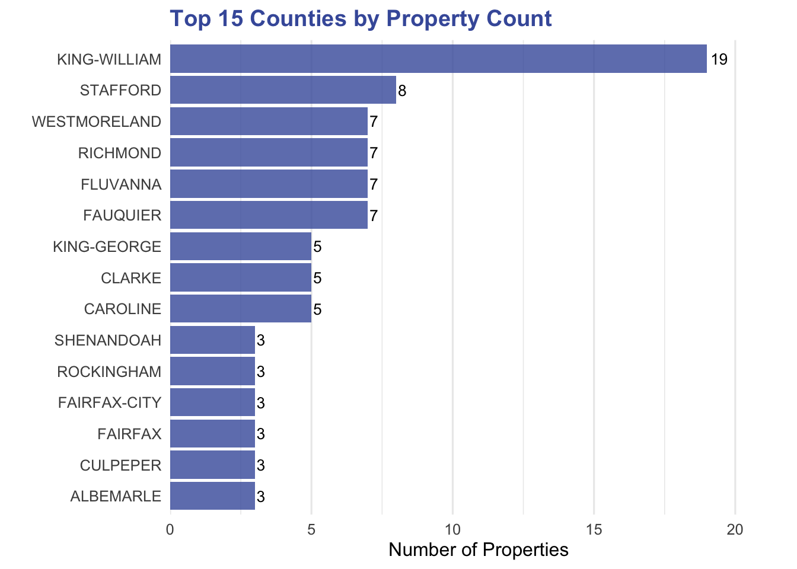
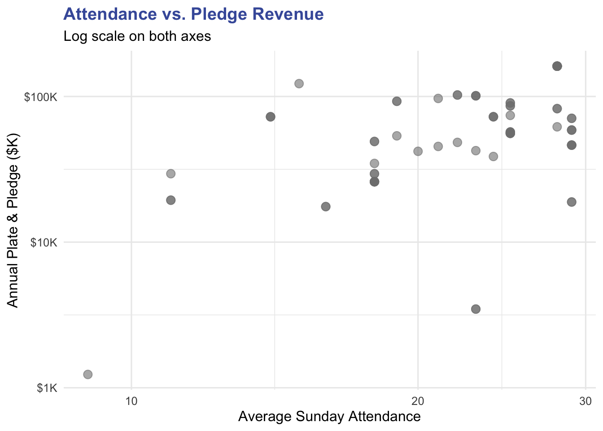

Property Portfolio Overview
Portfolio Summary
Property Use Types
Development Score Distribution

Property Size vs Development Score

Summary Metrics
| scounty | Properties | Total Acres | Avg Score | High Potential |
|---|---|---|---|---|
| KING-WILLIAM | 20 | 18.2 | 45.2 | 1 |
| FAUQUIER | 10 | 32.0 | 70.0 | 6 |
| STAFFORD | 9 | 46.3 | 60.0 | 2 |
| WESTMORELAND | 9 | 33.1 | 31.1 | 0 |
| RICHMOND | 8 | 9.4 | 53.1 | 1 |
| FLUVANNA | 7 | 8.4 | 46.4 | 1 |
| CLARKE | 6 | 4.2 | 55.0 | 2 |
| FAIRFAX | 6 | 16.9 | 75.0 | 4 |
| CAROLINE | 5 | 2.1 | 40.0 | 0 |
| KING-GEORGE | 5 | 77.4 | 40.0 | 0 |
| NA | 5 | 0.0 | 30.0 | 0 |
| ALBEMARLE | 3 | 12.6 | 85.0 | 3 |
| CULPEPER | 3 | 17.9 | 50.0 | 0 |
| ESSEX | 3 | 8.1 | 75.0 | 1 |
| FAIRFAX-CITY | 3 | 8.2 | 70.0 | 2 |
| Use Type | Count | Avg Size (Acres) | Avg Dev Score |
|---|---|---|---|
| Church | 87 | 1.92 | 55.9 |
| Open Space | 31 | 5.69 | 52.3 |
| Cemetery | 24 | 3.42 | 64.4 |
| Residence | 14 | 0.69 | 38.6 |
| Parking | 5 | 0.81 | 49.0 |
| Rank | Address | City | County | Acres | Score | Tier |
|---|---|---|---|---|---|---|
| 1 | AQUIA HARBOUR 22554 | AQUIA HARBOUR | STAFFORD | 31.38 | 85 | High Potential |
| 2 | 8695 OLD DUMFRIES RD, CATLETT 20119 | CATLETT | FAUQUIER | 2.36 | 85 | High Potential |
| 3 | WINCHESTER 22602 | WINCHESTER | FREDERICK | 1.67 | 85 | High Potential |
| 4 | 10520 MAIN ST, FAIRFAX 22030 | FAIRFAX | FAIRFAX-CITY | 4.11 | 85 | High Potential |
| 5 | 1 TRURO LN, FAIRFAX 22030 | FAIRFAX | FAIRFAX-CITY | 3.44 | 85 | High Potential |
| 6 | 3241 BRUSH DR, FALLS CHURCH 22042 | FALLS CHURCH | FAIRFAX | 5.64 | 85 | High Potential |
| 7 | WEST FALLS CHURCH 22042 | WEST FALLS CHURCH | FAIRFAX | 2.62 | 85 | High Potential |
| 8 | 3421 FRANCONIA RD, ALEXANDRIA 22310 | ALEXANDRIA | FAIRFAX | 4.39 | 85 | High Potential |
| 9 | 37018 GLENDALE ST, PURCELLVILLE 20132 | PURCELLVILLE | LOUDOUN | 2.02 | 85 | High Potential |
| 10 | 2918 RICHMOND HWY, STAFFORD 22554 | STAFFORD | STAFFORD | 8.15 | 85 | High Potential |
| 11 | 3439 PAYNE ST, FALLS CHURCH 22041 | FALLS CHURCH | FAIRFAX | 2.24 | 85 | High Potential |
| 12 | 10627 PATTERSON AVE, HENRICO 23238 | HENRICO | HENRICO | 5.08 | 85 | High Potential |
| 13 | 1704 WEST LABURNUM AVE, RICHMOND 23227 | RICHMOND | RICHMOND-CITY | 1.47 | 85 | High Potential |
| 14 | 4712 DICK WOODS RD, CHARLOTTESVILLE 22903 | CHARLOTTESVILLE | ALBEMARLE | 7.10 | 85 | High Potential |
| 15 | 39518 LITTLE RIVER TPKE, ALDIE 20105 | ALDIE | LOUDOUN | 1.13 | 85 | High Potential |
| 16 | 5092 GRACE CHURCH LN, MIDLAND 22728 | MIDLAND | FAUQUIER | 8.34 | 85 | High Potential |
| 17 | 1527 SENSENY RD, WINCHESTER 22602 | WINCHESTER | FREDERICK | 3.20 | 85 | High Potential |
| 18 | 5987 RICHMOND RD, WARSAW 22572 | WARSAW | RICHMOND | 2.24 | 85 | High Potential |
| 19 | 5096 GRACE CHURCH LN, MIDLAND 22728 | MIDLAND | FAUQUIER | 3.65 | 85 | High Potential |
| 20 | 5094 GRACE CHURCH LN, MIDLAND 22728 | MIDLAND | FAUQUIER | 2.76 | 85 | High Potential |
| Development Tier | # Properties | Total Acres | Avg Acres | Avg Score | Avg Walkability |
|---|---|---|---|---|---|
| High Potential | 30 | 146.1 | 4.87 | 85 | 8.0 |
| Moderate Potential | 14 | 46.0 | 3.29 | 70 | 5.4 |
| Low Potential - Constraints | 67 | 132.4 | 1.98 | 40 | 7.4 |
| Insufficient Data | 15 | 14.4 | 1.44 | 30 | 5.7 |
Geographic Distribution

Congregation Health Indicators
